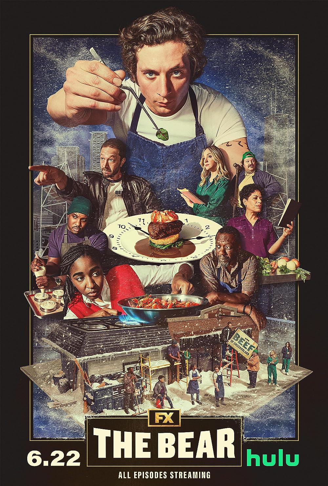

Spotify
Zanett loves listening to music. She typically uses Spotify (sometimes Apple Music) to listen to her favorite artists and songs while engaging in creative activites, exercising, and driving. Her taste in music consists of a wide variety of genres, as she listens to a little bit of everything. Some of her favorites, however, include alternative, rock, indie, folk, acoustic, electronic, shoegaze, punk, grunge, and others.
(Included on the left are some of her favorite artists and bands, and below is a playlist with some sample tracks from each artist)


Severance

On Apple TV+, Zanett really enjoyed this thriller series exploring the seperation of work lives and personal lives in a almost dystopian near future.
The Bear

On HULU, Zanett loves this comedy/drama series about a restaurant's staff struggling to juggle personal pasts, private lives, and professional problems.
Andor

On Disney+, Zanett really liked this original Star Wars series exploring the backstory of Captain Cassian Andor, a rebel spy introduced in the film Rogue One